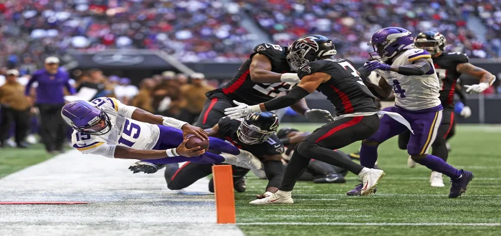

The meteoric rise of ‘The Passtronaut.’ How Josh Dobbs went from perennial back-up to cult hero

“What’s up, y’all? I’m Josh Dobbs. Honored to be in Minnesota and introduce myself.”
You might expect such an introduction to come from a player on a new team in the preseason, but Josh Dobbs was making his acquaintances post-game after being thrust into his debut for the Minnesota Vikings, impressively leading a game-winning drive despite not knowing his teammates’ full names.
The 28-year-old had only arrived days before the Vikings’ Week 9 clash against the Atlanta Falcons after being traded from the Arizona Cardinals and he began the game as the backup quarterback.
But after rookie Jaren Hall was ruled out with a concussion, Dobbs was thrown in at the deep end and excelled as he led the Minnesota Vikings to a 31-28 victory by going 20-for-30 and throwing for 158 yards with two touchdowns in the air and one on the ground.
In just a few short months, Dobbs has gone from a player struggling to find a home in the NFL to a household name, and his willingness to run a high-wire act with the ball in his hand has earned the quarterback, who has a degree in aerospace engineering, arguably the league’s best nickname: “The Passtronaut.”
In keeping with his new nickname, the quarterback – who also has the moniker “Astro Dobbs” – isn’t ruling out a trip away from this planet.
“It’s really cool to see the amount of commercial opportunities to go to space and the amount of people that have the opportunities to become astronauts. It’s on my bucket list. Obviously that’s a huge decision to make but it would be cool,” Dobbs told the “The Dave Pasch Podcast” in October.
But despite his success on the field, Dobbs had to wait until the third day of the 2017 Draft to discover his new home, and when the Pittsburgh Steelers did select him he had to settle for a third-string position on the roster, behind starter Ben Roethlisberger and backup Landry Jones.